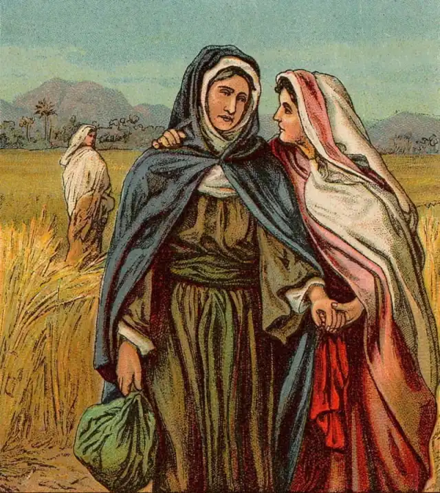
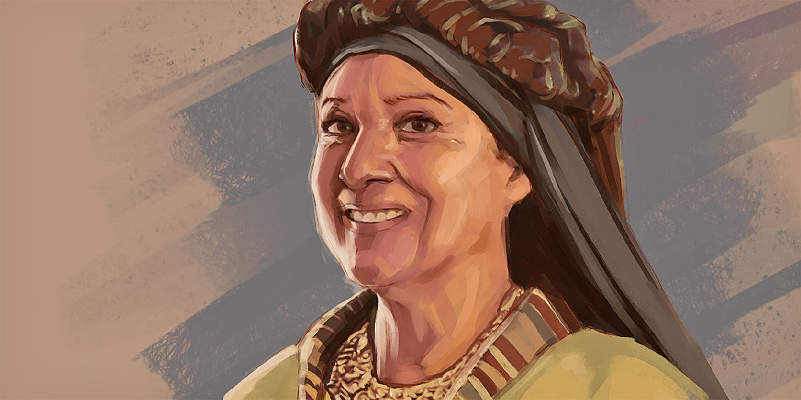
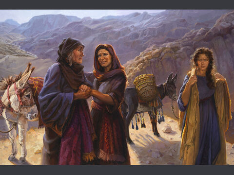
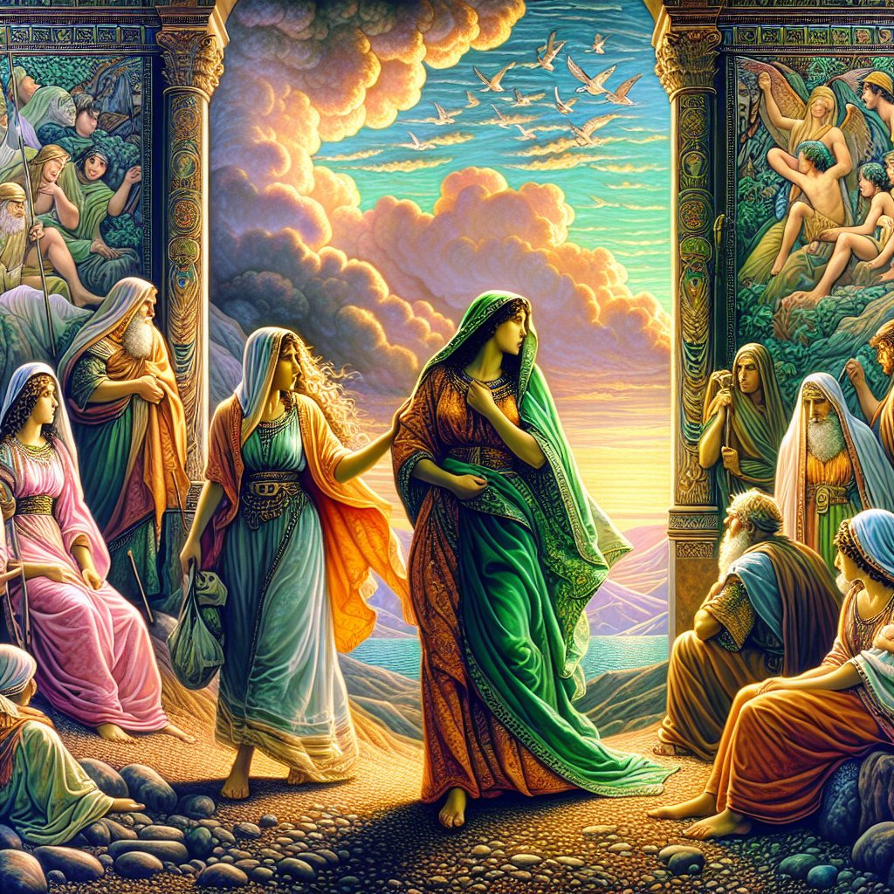
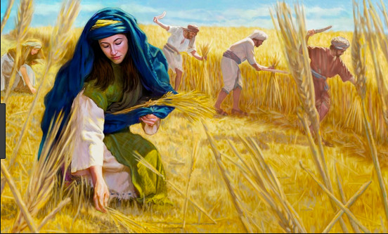

Ruth and Naomi – A Story of Friendship and Faith
Ruth trusted God completely. Her love, faithfulness, and humility brought blessings not only to her life but to generations after her. God never abandons those who put their trust in Him. Friendship and faith can lead us to unexpected blessings. “Love and faith have the power to touch God’s heart — and to turn sorrow into joy.”
Ruth and Naomi – A Story of Friendship and Faith

Naomi’s Life of Sorrow
நவோமியின் துயரமான வாழ்க்கை
Long ago, there was a great famine in the land of Judah. A woman named Naomi, along with her husband Elimelech and their two sons, moved to the country of Moab to survive. They lived there for several years, but tragedy struck — Naomi’s husband died. Later, her two sons married Moabite women, Orpah and Ruth. After some time, both of Naomi’s sons also died. Naomi was left alone — without her husband and without her sons.
பண்டைய காலத்தில் யூதா தேசத்தில் ஒரு பெரிய பஞ்சம் ஏற்பட்டது. அப்பொழுது நவோமி என்ற பெண், தன் கணவன் எலிமெலேக், மற்றும் இரண்டு மகன்களுடன் மோவாப் தேசத்துக்குப் பயணம் செய்தாள். மோவாப் தேசத்தில் சில ஆண்டுகள் வாழ்ந்தார்கள், ஆனால் திடீரென்று நவோமியின் கணவர் இறந்தார். அவளின் இரண்டு மகன்களும் மோவாப் பெண்களான ஓர்பா மற்றும் ரூத் என்பவர்களை மணந்தனர். ஆனால் சில ஆண்டுகளுக்குப் பிறகு, அவளின் இரு மகன்களும் மரணமடைந்தனர். நவோமி துயரத்தில் மூழ்கினாள் — அவளிடம் இப்போது கணவரும், மகன்களும் இல்லை.

Naomi’s Decision – Returning Home
நவோமியின் முடிவு – வீடு திரும்புதல்
When Naomi heard that the Lord had blessed Judah with food again, she decided to return to her hometown, Bethlehem. She said to her daughters-in-law, “Go back to your own homes. I am too old to give you husbands again.” Orpah wept, kissed Naomi, and went back. But Ruth refused to leave her.
பஞ்சம் முடிந்தது, தேவன் யூதாவுக்கு உணவைக் கொடுத்தார் என்று நவோமி கேட்டாள். அவள் தன் சொந்த ஊரான பெத்லெஹேமுக்கு திரும்ப முடிவு செய்தாள். அவள் தன் மருமகள்களிடம் சொன்னாள்: “நீங்கள் உங்கள் சொந்த வீட்டுக்குத் திரும்புங்கள். நான் முதுமையில் இருக்கிறேன்; உங்களுக்கு கணவர்களை அளிக்க முடியாது.” ஓர்பா அழுதாள், முத்தமிட்டு திரும்பினாள். ஆனால் ரூத் மட்டும் நவோமியை விட்டு பிரிய மறுத்தாள்.

Ruth’s Faith and Love
ரூத்தின் நம்பிக்கையும் அன்பும்
Naomi said again, “My daughter, go back with your sister-in-law.” But Ruth spoke these beautiful words: “Where you go, I will go; where you stay, I will stay. Your people will be my people, and your God will be my God.” These words showed Ruth’s deep faith and loyalty. She left her homeland and her gods, choosing to follow Naomi’s God — the true and living God.
நவோமி ரூத்திடம் மீண்டும் சொன்னாள்: “மகளே, உன் சகோதரி திரும்பிச் சென்றாள்; நீயும் போ.” அதற்கு ரூத் அழகான வார்த்தைகளைச் சொன்னாள்: “நீ போகும் இடத்திற்குப் போவேன்; நீ தங்கும் இடத்தில் தங்குவேன்; உன் மக்கள் எனது மக்கள்; உன் தேவன் எனது தேவன்.” அந்த வார்த்தைகள் ரூத்தின் நம்பிக்கையும் உண்மையையும் காட்டின. அவள் தன் சொந்த தேசத்தையும் தேவனையும் விட்டு, நவோமியின் தேவனைத் தன் தேவனாக ஏற்றுக்கொண்டாள்.

A New Beginning in Bethlehem
பெத்லெஹேமில் புதிய தொடக்கம்
Naomi and Ruth arrived in Bethlehem just as the barley harvest began. Ruth went out to gather leftover grain from the fields so she and Naomi could eat. The field she worked in belonged to a kind man named Boaz, who was a relative of Naomi’s family. Boaz saw Ruth’s kindness, hard work, and faithfulness, and he treated her with love and respect.
அவர்கள் இருவரும் பெத்லெஹேமுக்கு வந்தனர். அங்கு ரூத் தானாகவே வயல்களில் முளைத்த தானியங்களைச் சேகரித்து நவோமிக்காக உழைத்தாள். அவள் உழைத்த வயல் போவாஸ் என்ற நல்ல மனிதருடையது. போவாஸ் நவோமியின் குடும்பத்தாரில் ஒருவராக இருந்தார். அவர் ரூத்தின் கருணையும், உழைப்பையும் பார்த்து, அவளிடம் அன்பாக நடந்து கொண்டார்.
God’s Grace – A New Blessing
தேவனின் கிருபை – புதிய ஆசீர்வாதம்
Boaz later spoke with Naomi and agreed to marry Ruth. Their marriage was blessed by God, and they had a son named Obed. Obed brought great joy to Naomi’s heart. He later became the father of Jesse, who was the father of King David — and through this family line came Jesus Christ, the Savior of the world
போவாஸ் நவோமியுடன் ஆலோசித்து, ரூத்துடன் திருமணம் செய்துக்கொண்டார். அவர்களுக்கு ஓபேத் என்ற மகன் பிறந்தான். அந்தக் குழந்தை நவோமிக்கு பெரும் மகிழ்ச்சி தந்தான். ஓபேத் பின்னர் யேசேயின் தந்தை, அவரே தாவீதின் தந்தை — இறுதியில் இயேசு கிறிஸ்துவின் வம்சத்தில் வந்தார்!
God’s timing is perfect. He places us in certain positions, relationships, and moments “for such a time as this.” When we obey His call, He turns ordinary people into extraordinary instruments of His will. “Be like Esther — rise with faith, speak with courage, and act with love. For when you walk in obedience, God’s favor will always go before you.”